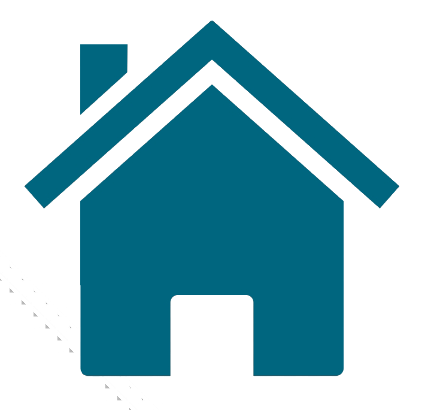

Servicii medicale si tarife :
Clinica Popmed Serv este in relatie contractuala cu Casa de Asigurari de Sanatate Mures, fiecare pacient internat beneficiaza de calitatea de asigurat, costul unei zile de spitalizare fiind suportat de Casa de Asigurari de Sanatate si de catre pacient. Partea din pret suportata de pacient (coplata) este achitata in temeiul Titlului VIII, Sectiunea a 6-a, Art. 237, alin. 1, lit. d din Legea nr. 95/2006, actualizata, privind reforma in domeniul sanatatii, si constituie serviciu hotelier cu grad inalt de confort.
Pret de internare 195 lei/zi
• Asigurarea liniei de garda cu medic , on call 24/7.
• Recoltare analize la internare si in dinamica (la nevoie).
• Administrarea medicatiei oral (per os, iv, inclusiv perfuzie endovenoasa, cateter venos central)
• Administrare pe seringa automata (injectomat, infuzomat)
• Monitorizare parametrii vitali (2/zi sau la nevoie - TA, AV, SPO2, temperatura)
• Manevre terapeutice pentru evitarea escarelor
• Mobilizare din 2 in 2 ore si posturare
• Manevre terapeutice pentru evitarea complicatiilor vasculare si/sau pulmonare
• Montare/schimbare sonda nazo-gastrica
• Alimentare/hidratare pe sonda nazo-gastrica
• Montare/schimbare sonda urinara
• Ingrijire sonda urinara
• Lavaj vezical
• Ingrijire stome (ileostoma, colostoma, cistostoma, nefrostoma)
• Alimentare si hidratare per os (oral), gastrostoma
• Administrare de medicamente: oral, I.M., I.V., SUBCUTAN, PEV, pe injectomat
• Terapia durerii prin metode specifice
• Administrare PEV pentru hidratare
• Masurare glicemie
• Ingrijirea tubului de dren
• Ingrjire canula traheala
• Aspiratie prin canula traheala
• Clisma (la nevoie)
• 1 Sedinta de Kinetoterapie/zi
• 1 Sedinta de masaj medical/zi
• Cazare in saloane moderne cu 3 paturi
• Saloane si bai special amenajate pentru nevoile specifice ale pacientilor
• Hrana asigurata, regim catering, de 3 ori /zi.
• Igiena corporala, o data la doua zile si la nevoie.
• Materialele sanitare, medicamentele de urgenta, scutecele utilizate si costul analizelor medicale de urgenta sunt incluse in pret.
• Pachetul de recuperare este personalizat în funcție de diagnosticul fiecărui pacient
Meniuri personalizate pentru fiecare patologie (ex. regim diabetic, regim renal)
Hrana:
- Mic dejun
– Pranz
– Cina
Cazarea:
– Cazare in saloane moderne cu 3 paturi
– Saloane si bai special amenajate pentru nevoile specifice pacientilor
– Igiena corporala, o data la doua zile sau la nevoie (cu produse de igiena contracost)
1 sedinta de Kinetoterapie / zi care cuprinde:
• Bicicleta statica si dinamica
• Banda reeducare a mersului
•Stimulator electric Tens si EMS
• Spalier, minge ortopedica, gantere, benzi
• Roata marinareasca
• Recuperare deglutitie (daca este cazul)
• Terapie Ocupationala
• Exercitii logopedice
1 sedinta de masaj medical / zi
Servicii medicale contra cost, pentru pacientii care se interneaza in sistem privat:
• Consult medical la internare
• Lavaj vezical
• Plaga simpla
• Plaga postoperatorie
• Punctie abdominala
• Ingrijirea escarelor (fără cost hidrocoloid)
• Ingrijirea plăgilor suprainfectate (fără cost hidrocoloid)
• Ingrijirea escarelor multiple
• Decaparea escarelor de catre medicul chiurg
• Suprimarea firelor de sutură( de catre medicul chirurg)
• Pachet igiena (aleza, pampers, servetele umede, manusi, masca)
• Pachet sonda nazogastrica
• Pachet igiena baie (manusi toaletare par, manusi toaletare piele, sapun, sampon, balsam, etc.)
• Pachet perfuzie (perfuzor, omnifix, plasa, seringa, manusi, masca)
• Pachet intretinere sonda urinara (punga urinara, manusi, masca, seringa)
• Sonda urinara (sonda foley, punga urinara, manusi, masca, seringa, ulei de ricin)
• Pachet injectomat (seringa 50 ml, prelungitor, branula+capac, plasture branula, manusi, masca, omnifix
• Oxigenoterapie (masca oxigen / narine / masca oxigen cu nebulizare, seringa, manusi, masca)
• Pachet microclisma (set clisma, sapun + servetele umede, ulei, crema, masca, manusi)
• Pachet macroclisma (set clisma sac glicerina, ulei, crema, sapun+servetele umede, masca, manusi)
Servicii suplimentare contracost, altele decat cele incluse in pachetul de baza la internare:
• Sedinta logopedie, sedinta consiliere psihologica, consultatii medicale la cerere.
• Transport ambulanta (de la si la spital sau domiciliu, deplasari investigatii)
• Sedinte cu lampa cu lumina bioptron, pentru vindecarea mai rapida si calmarea durerii in anumite afectiuni de
ordin medical, cum ar fi:
* tratamentul escarelor, plagilor, cicatricilor
* dureri de cap
* acnee si pzoriazis
* dureri cervicale sau lombare
* intarirea sistemului imunitar
• Taxa rezervare pat (in cazul in care pacientul pleaca din unitatea noastra la
alta unitate spitaliceasca,
patul
pacientului ramane rezervat pentru el pana in momentul in care un membru al familiei solicita in scris externarea
pacientului)
